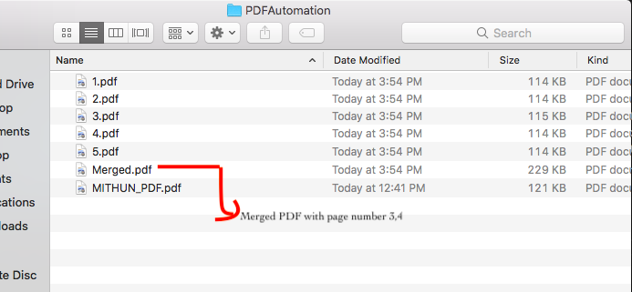

Example : Runtime Break And Merge PDF By Parameter
Let's take an example of a PDF file which has 30 pages. Now if we split it , we will create 30 PDF files , where runtime after split we want to Merge page number 24,25,26 and create a new PDF file of these 3 pages. How to do that???
Below example is showing :
We have a PDF with 5 pages.
Splitting the PDF with All 5 Pages.
Passsing a runtime parameter as 3,4
This would create a final/merged PDF with page number 3 and 4. These two number we are Passsing
as parameter.
Full end to end flow is happening runtime.
First Split the PDF file
// Below Code is Splitting
try {
File file =new File("/Users/path/Downloads/PDFAutomation/"+"MITHUN_PDF.pdf");
//Loading an existing PDF document
PDDocument document = PDDocument.load(file);
// Create a Splitter object
Splitter splitter = new Splitter();
//splitting the pages of a PDF document
List<PDDocument> Pages = splitter.split(document);
//Creating an iterator object
Iterator<PDDocument> iterator = Pages.listIterator();
//saving splits as individual PDF document
int pdfPageNumber = 1;
while(iterator.hasNext()) {
PDDocument pd = iterator.next();
pd.save("/Users/path/Downloads/PDFAutomation/"+ pdfPageNumber++ +".pdf");
}
System.out.println("PDF File Split is Done");
document.close();
}
catch(Exception e) {System.out.println("PDF Split is Fail"); }
Passing veriable as a parameter as below with 2 page numbers which we want to merge after split.
public static String mergePDFPages = "3,4";
Creating an object of PDFMergerUtility , and setting destination of merged file save location.
PDFMergerUtility mergePdf = new PDFMergerUtility(); mergePdf.setDestinationFileName("/Users/path/Downloads/PDFAutomation/"+"Merged.pdf");
Now iterating 'mergePDFPages' variable from first element to last element and comparing with all splitted files present in that folder which just now we have crated. Once element name match page number then add that page to merge. Once all element iteartion is done then save the final PDF merged file.
First Split then Merge as per page number , full code is given below.
After PDF Split and Merge
